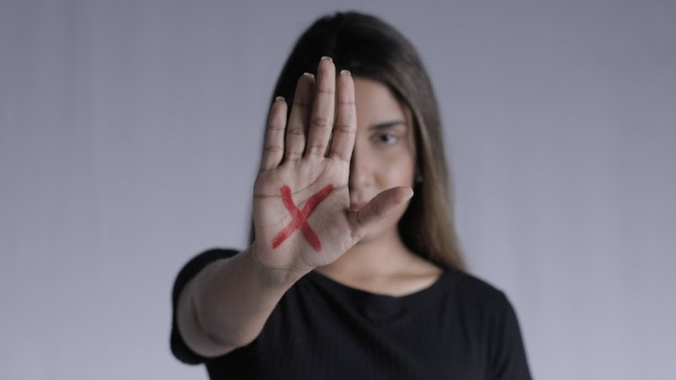

A ideia de superioridade do homem brasileiro autoriza a prática da violência contra a mulher
Machismo e violência
ㅤㅤO seriado “Bom dia, Verônica” (2022) retrata a história de uma mulher que se dedica a apoiar e ajudar
mulheres vítimas de casos de violência. Para além da ficção, a agressão contra o sexo feminino persiste no
Brasil, sendo ela física, psicológica, sexual, moral ou patrimonial e reforça os estereótipos de inferioridade
enraizados na sociedade. Essa problemática é agravada por fatores como o machismo socioeconômico, o
descaso governamental e a insuficiência do ensino escolar em relação ao empoderamento feminino.
ㅤㅤSob essa ótica, evidencia-se um grande machismo socioeconômico na sociedade brasileira. Segundo a
G1 (2023), informa pesquisa feita pelo Programa das Nações Unidas para o Desenvolvimento (PNUD) que no
Brasil, 84,5% das pessoas têm pelo menos um tipo de preconceito contra mulheres. Essa discriminação contra o
gênero feminino se resulta na violência, na limitação de oportunidades de direitos e no prejuízo à saúde mental,
prejudicando a vida cotidiana feminina.
ㅤㅤDiante disso, o descaso governamental arruína a segurança das mulheres. Dados da G1 (2023) informa
que 492 delegacias especializadas no atendimento à mulher no país, apenas 60 funcionam 24 horas por dia.
Mesmo que poucos funcionam de forma integral, ainda é um número pequeno de unidades especializadas do
gênero. Esse obstáculo causa o aumento da violência doméstica, a dificuldade de denunciar os agressores e o
aumento do feminicídio.
ㅤㅤAdemais, existe a insuficiência do ensino escolar em relação ao empoderamento feminino. Uma citação
de Sérgio Adorno, sociólogo e professor da USP, diz que “O Estado não pode fomentar a violência, mas sim
contê-la”. Essa falta de conhecimento dificulta na capacidade de entender sobre igualdade e o respeito mútuo
entre gêneros opostos, a qual provoca na perpetuação de normas e atitudes prejudiciais que toleram ou
encorajam a violência contra as mulheres.
ㅤㅤ Diante dessa misoginia, cabe ao Núcleo Especializado de Promoção e Defesa dos Direitos das Mulheres
(NUDEM) junto com o Ministério da Educação, ampliar as Delegacias de Atendimento à Mulher (DEAMs) com
políticas de acessibilidade e acolhimento e inserir o ensino do empoderamento feminino nas escolas para
promover o respeito mútuo entre os gêneros e combater contra essa brutalidade. Sob essas medidas, podem
melhorar a segurança e combater a violência, como é mostrado no seriado "Bom dia, Verônica".
Autores da redação: Adriel Souza Ferreira Lima e Luiz Eduardo Magalhães Lopes
